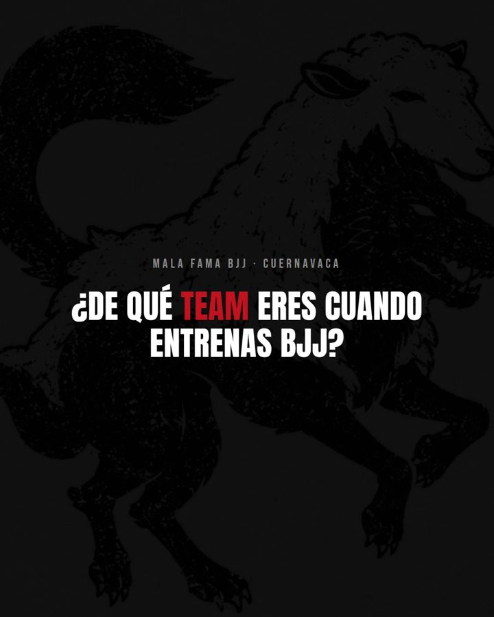
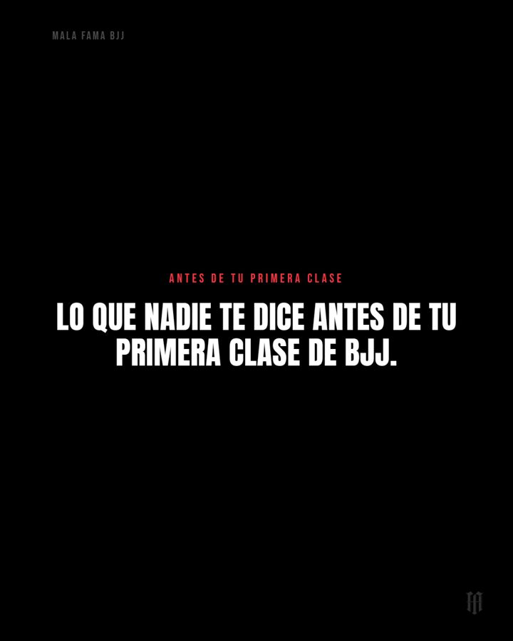
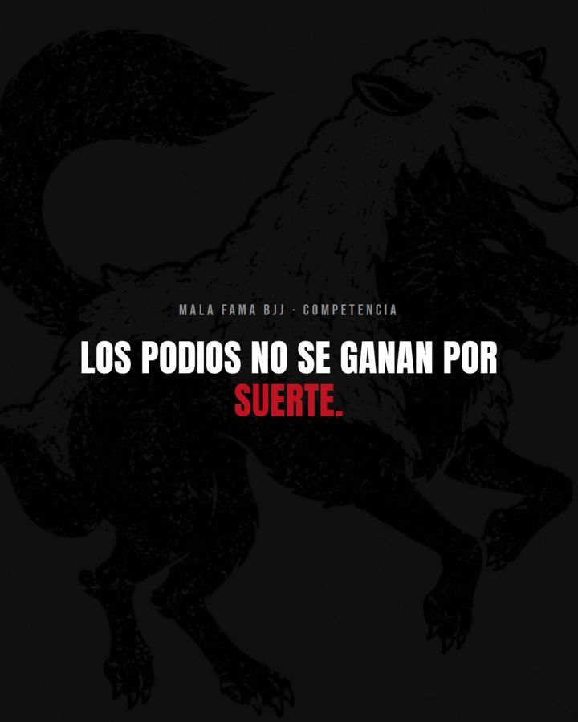
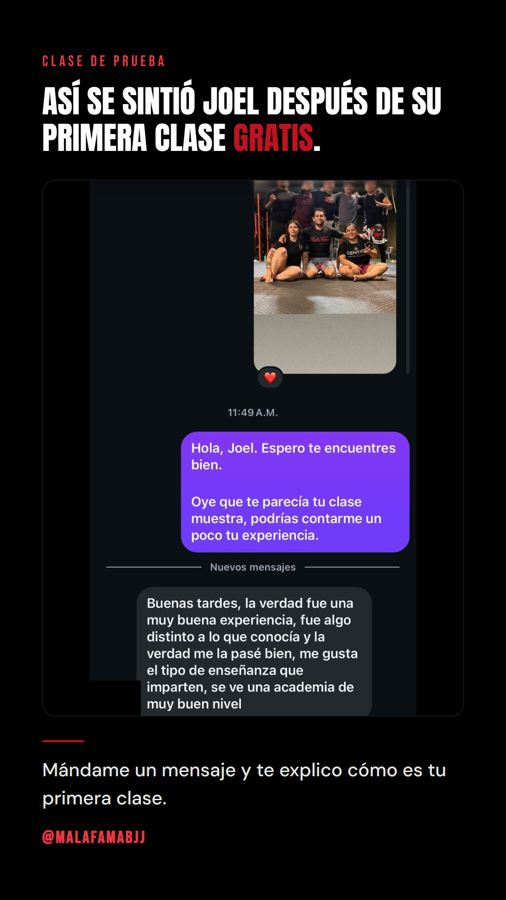
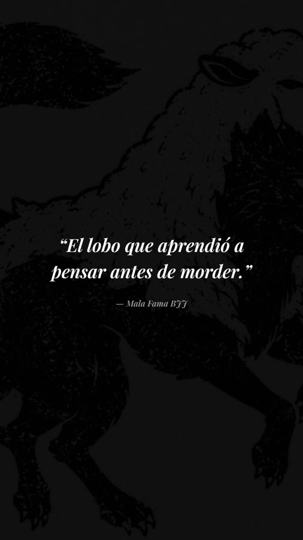
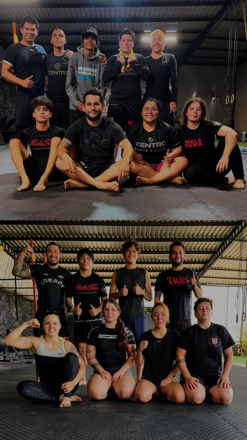

Academia de Jiu-Jitsu · Cuernavaca, México
Mala Fama BJJ
La academia crecía de boca en boca. Armamos su identidad en redes, un mes completo de contenido y su primera campaña de anuncios a WhatsApp para agendar clase de muestra.
- Conexión: el avatar principal es el papá de 35 que cree que ya es tarde para empezar. Ese ángulo fue el que mejor vendió.
- Conversión: carrusel con lo que nadie te dice antes de tu primera clase, para bajar el miedo antes del mensaje.
- Transformación: historias con mensajes reales de alumnos después de su clase de prueba.
- Control de pagos en Google Sheets con recordatorios automáticos de mensualidad.
Primera campaña de anuncios
39conversaciones de WhatsApp en los primeros 4 días
6alumnos nuevos inscritos, cuando se esperaban de 1 a 3





